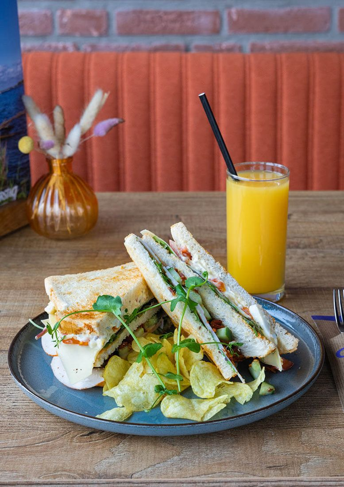
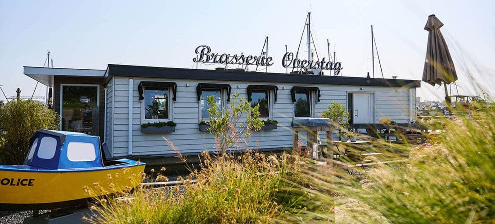
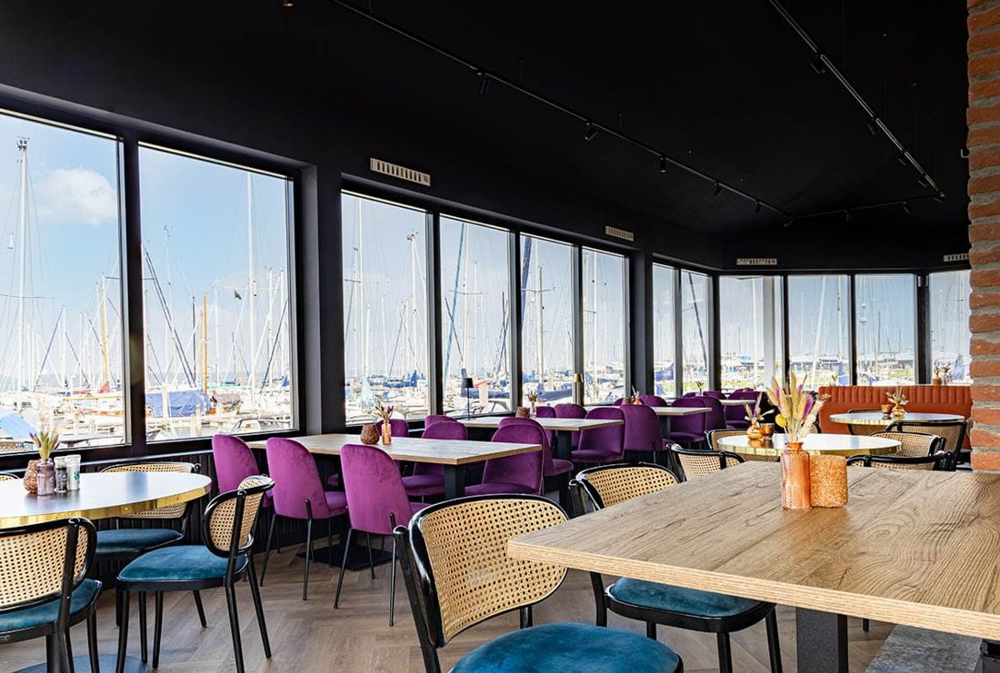
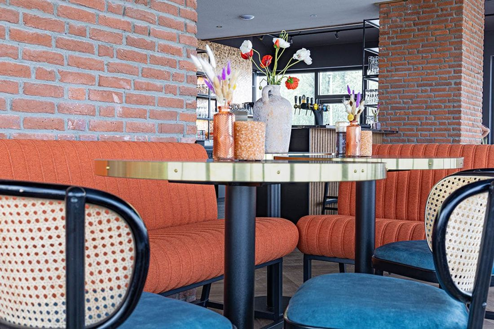
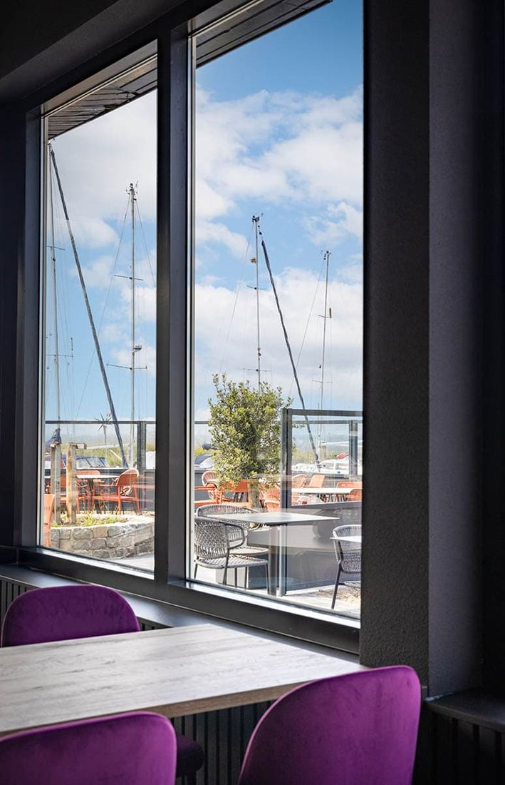
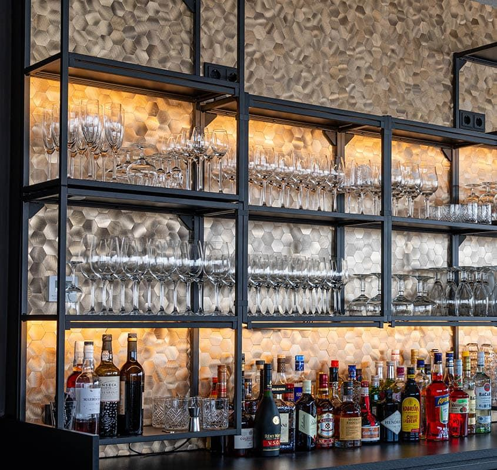
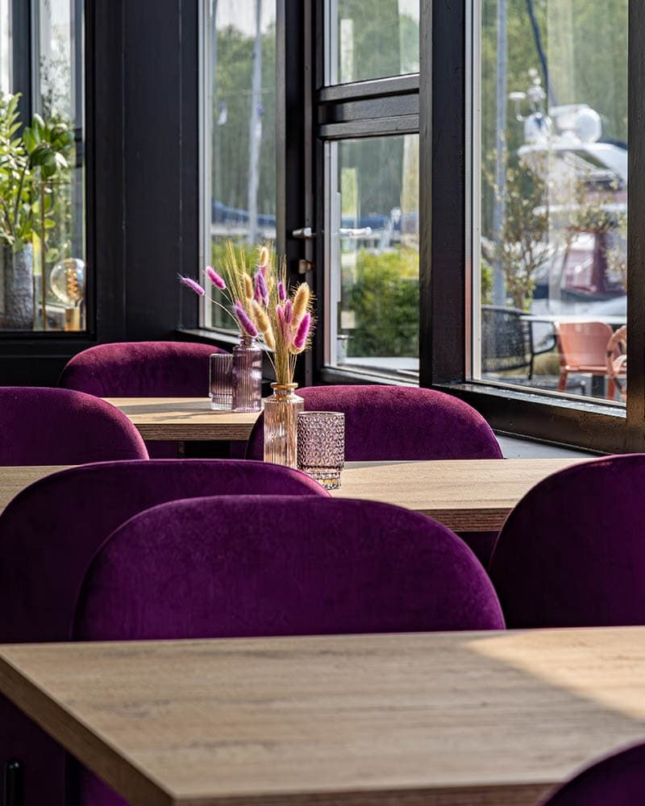
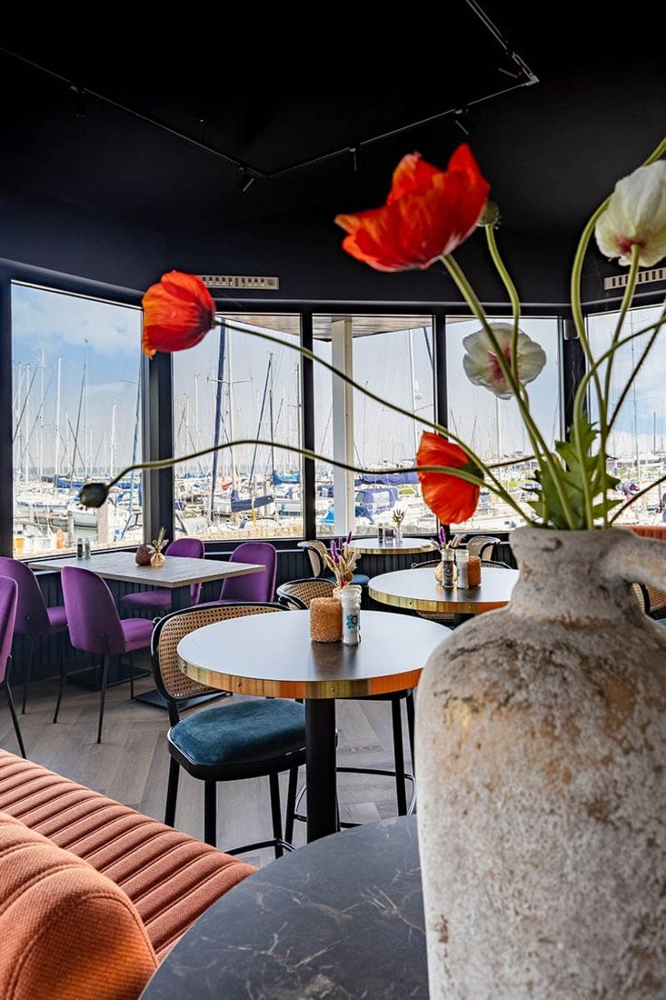
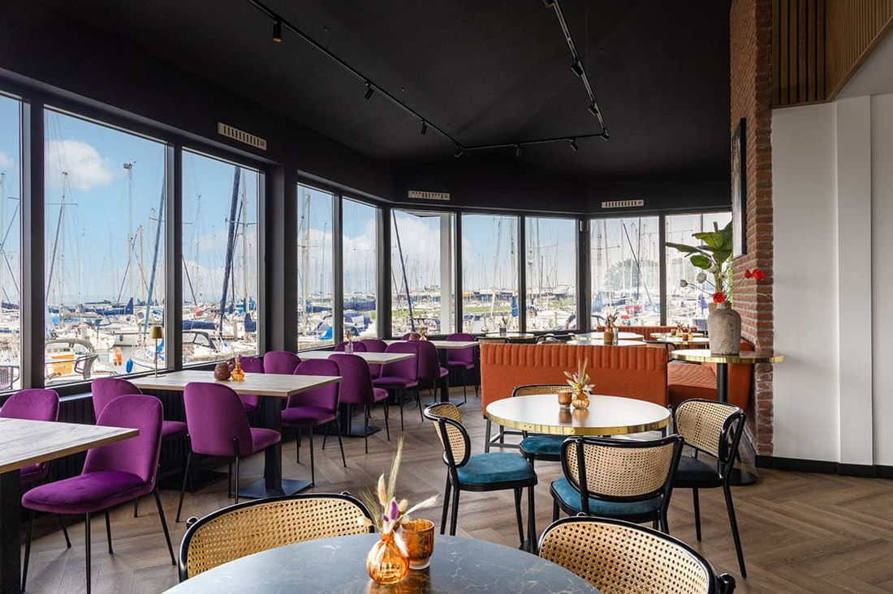

Lunch
Uitsmijters, tosti's, proeverijen, kroketten en huisgemaakte soep. Te bestellen tot 15:30 uur.
vanaf € 7,50Bekijk
Lekker eten aan jachthaven Noordschans in Klundert. Fietsers, watersporters, wandelaars, families en bedrijven: iedereen is welkom.

Brasserie Overstag is een warm en gezellig restaurant aan jachthaven Noordschans in Klundert. Op ons terras aan het water geniet je van een hapje en een drankje, binnen kijk je door de grote ramen uit over de boten.
Gastvrijheid en service staan bij ons voorop. We hebben aandacht voor jou als gast, en dat merk je: wie de sfeer bij Overstag heeft geproefd, komt steeds weer terug.
Overal grote ramen, met uitzicht op de jachthaven.






Op zoek naar een goede locatie voor een bijeenkomst? Bij ons zit je op een gezellige plek aan het water, in een informele sfeer. We staan open voor ideeën.

Bel ons om een tafel te reserveren. We zien je graag aan het water.
Ook voor vragen over groepen, zakelijke bijeenkomsten of kerst.
Van 1 oktober tot 1 maart op maandag en donderdag gesloten.
Vakantie: 28 december 2026 tot en met 8 januari 2027.